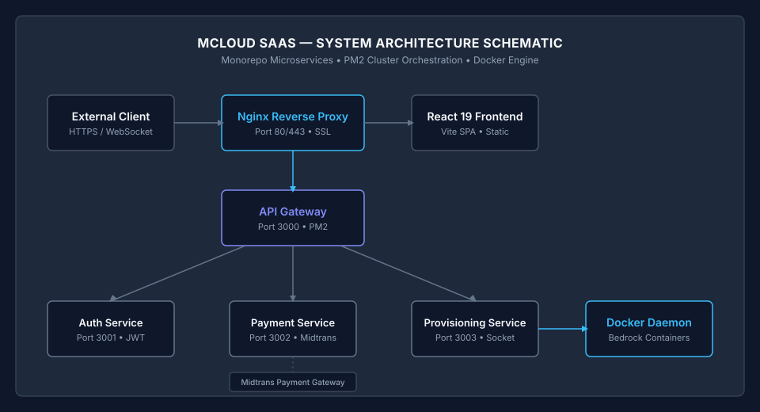

MCloud SaaS Technical Documentation
An automated, autonomous Minecraft Bedrock Edition cloud hosting and server provisioning platform built on a monorepo microservices architecture.
System Architecture & Data Flow
The platform separates core responsibilities across four independent Node.js microservices. External traffic is terminated by an Nginx reverse proxy using Let's Encrypt SSL certificates before routing to the internal API Gateway.

| Service Name | Internal Port | Core Responsibility | Key Technologies |
|---|---|---|---|
| API Gateway | 3000 |
Central request proxy, rate limiting, and WebSocket upgrade handling for live terminal logs. | Node.js HTTP, http-proxy, WS |
| Auth Service | 3001 |
User authentication, JWT access token issuance, bcrypt password hashing, and role validation. | Drizzle ORM, SQLite, JWT, Bcrypt |
| Payment Service | 3002 |
Midtrans Snap API integration, transaction invoice generation, and HTTP webhook notification handling. | Midtrans Client, Axios, Crypto |
| Provisioning Service | 3003 |
Direct Docker Daemon communication, container volume binding, port allocation, and resource polling. | Docker Socket API, Child Process |
Technical Specifications & Design Standards
The software engineering decisions behind MCloud SaaS prioritize execution speed, minimal memory overhead, and operational reliability.
Native HTTP Execution
Microservices are implemented using native Node.js HTTP modules without heavy web frameworks. This reduces cold-start latency and minimizes memory footprint per service instance.
PM2 Cluster Orchestration
Process management is handled via an ecosystem configuration file with automatic memory limit restarts (`max_memory_restart`), structured error logs, and system startup persistence.
Docker Volume Isolation
Each Minecraft Bedrock server runs in a dedicated container bound to a persistent host storage directory (`/opt/mcloud/volumes/`). Network access is isolated to designated UDP game ports.
Database Persistence
Data relational modeling is executed through Drizzle ORM paired with SQLite. This eliminates database server network overhead while providing type-safe query execution.
Documentation Index
Access complete deployment instructions, developer reference guides, and project roadmaps directly from our open-source documentation repositories.
Production Setup & VPS Deployment Guide
Complete guide for deploying on Ubuntu/Debian Linux, including Nginx reverse proxy configuration, Let's Encrypt SSL, PM2 cluster setup, Midtrans production keys, and UFW firewall rules.
Local Setup & Installation Reference
Instructions for configuring local environment variables, initializing the SQLite database with Drizzle ORM migrations, and launching the Vite development server.
Monorepo Directory Structure & Code Map
Detailed documentation of the monorepo workspace structure, internal package dependencies, and file organization across all frontend and backend services.
Product Requirement Document (PRD)
Comprehensive overview of target personas, functional requirements, payment processing workflows, and system boundary specifications.
SDLC Roadmap & Feature Checklist
Historical changelog tracking release milestones from v1.0.0 to v1.5.0, active maintenance checklists, and planned future enhancements.
Contributing Guidelines
Standard operating procedures for contributing code, formatting commit messages using Conventional Commits, and submitting pull requests.